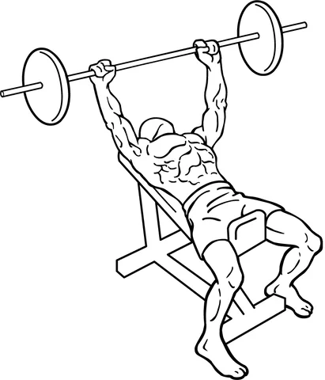
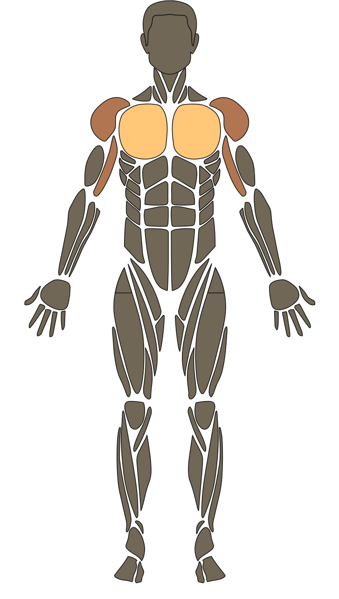
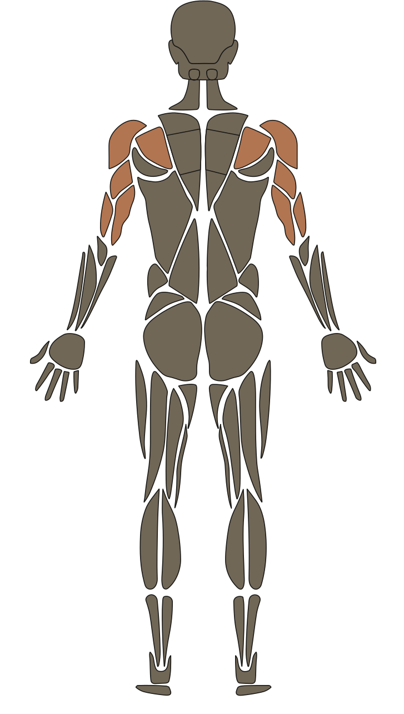

Hoje
Sábado, 14 de novembro
Evolução de carga
Maior carga registrada por sessão
Esta semana
2 de 3 treinos da agenda concluídos
- Seg9
- Ter10
- Qua11
- Qui12
- Sex13
- Sáb14Hoje
- Dom15
Progresso
Compare suas sessões no mesmo exercício.
Evolução de carga
Maior carga registrada por sessão
Editar rotina
Superior B · Plano de força
Dados da rotina
Identifique o treino na semana.
Histórico
Consulte os treinos por dia.
Inferiores43 min · 3 séries concluídas
Volume de carga1.770 kgSoma de carga × repetições das séries de trabalho concluídas.
Agachamento livre
| Série | Carga | Reps |
|---|---|---|
| Aquecimento | 60 kg | 8 |
| 1 | 100 kg | 6 |
| 2 | 100 kg | 6 |
| 3 | 95 kg | 6 |
Superior A47 min · 6 séries concluídas
Volume de carga2.837,5 kgSoma de carga × repetições das séries de trabalho concluídas.
Supino inclinado com barra
| Série | Carga | Reps |
|---|---|---|
| Aquecimento | 40 kg | 10 |
| 1 | 60 kg | 8 |
| 2 | 60 kg | 8 |
| 3 | 57,5 kg | 7 |
Remada curvada
| Série | Carga | Reps |
|---|---|---|
| 1 | 52,5 kg | 10 |
| 2 | 50 kg | 10 |
| 3 | 50 kg | 9 |
Superior B44 min · 6 séries concluídas
Volume de carga2.732,5 kgSoma de carga × repetições das séries de trabalho concluídas.
Supino inclinado com barra
| Série | Carga | Reps |
|---|---|---|
| Aquecimento | 40 kg | 10 |
| 1 | 57,5 kg | 8 |
| 2 | 57,5 kg | 8 |
| 3 | 55 kg | 7 |
Remada curvada
| Série | Carga | Reps |
|---|---|---|
| 1 | 50 kg | 10 |
| 2 | 50 kg | 10 |
| 3 | 47,5 kg | 9 |
Cardio24 min
Caminhada na esteira
24 min · 1,8 km
Inferiores42 min · 3 séries concluídas
Volume de carga1.680 kgSoma de carga × repetições das séries de trabalho concluídas.
Agachamento livre
| Série | Carga | Reps |
|---|---|---|
| Aquecimento | 60 kg | 8 |
| 1 | 95 kg | 6 |
| 2 | 95 kg | 6 |
| 3 | 90 kg | 6 |
Superior B
Treino ativo
Supino inclinado com barra
Meta da rotina · 3 × 6–8 reps
| Série | Anterior | kg | Reps | Concluída |
|---|---|---|---|---|
| 1 | 60 × 8 | |||
| 2 | 60 × 8 | |||
| 3 | 60 × 7 |
Descanso01:24
Como executar
Supino inclinado com barra

Músculos envolvidos


- Principais Peito
- Auxiliares Ombros e tríceps
Perfil
Preferências e sua instalação.
- DispositivosPareamento e estado de sincronizaçãoAbrir Dispositivos
- Assistente de treinoRevisão semanal e provedor localAbrir Assistente de treino
Dispositivos
Controle os aparelhos conectados à sua instalação.
Instalação
forja.casa.test
- Este computadorÚltima sincronização às 10:24
- Celular principalÚltima sincronização às 09:47
Convite de pareamento
Demonstração de entrada manual
- Endereço
- forja.casa.test
- Código de exemplo
- 704 291
Assistente de treino
Revisão semanal · 8–14 nov.
Dados da semana
Prévia local · séries de trabalho
2 de 3Treinos concluídos
35Séries de trabalho
- 10 nov. · Superior A19 séries
- 12 nov. · Inferiores16 séries
Superior B
Substituição sugerida para usar o banco disponível.
- Atual
- Remada curvada
- Sugerido
- Remada apoiada no banco
Provedor
Processamento nesta instalação